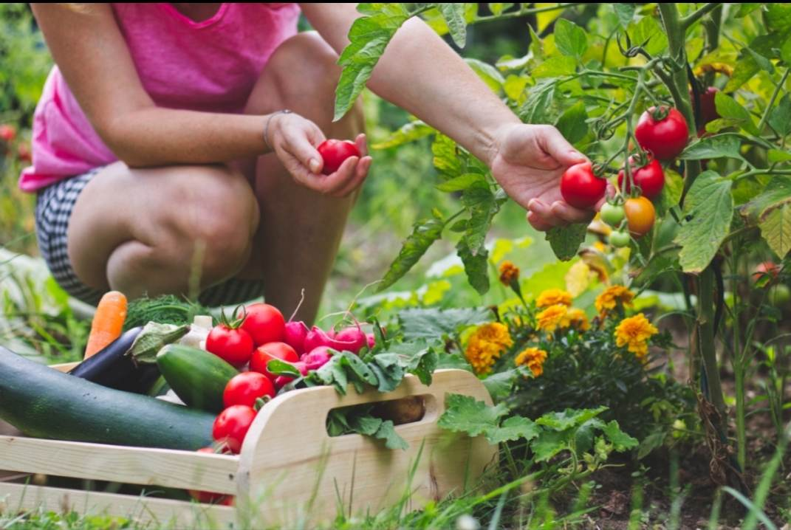
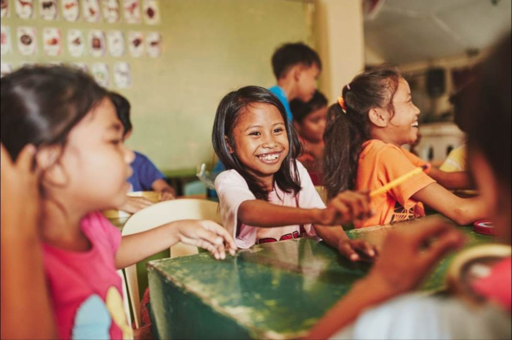
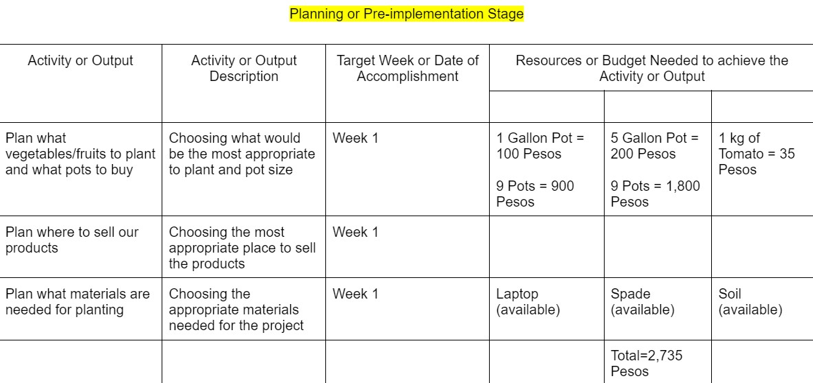
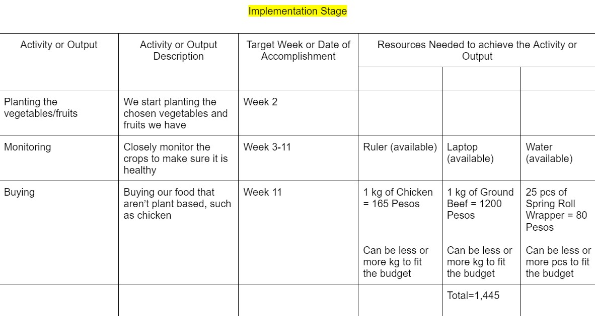
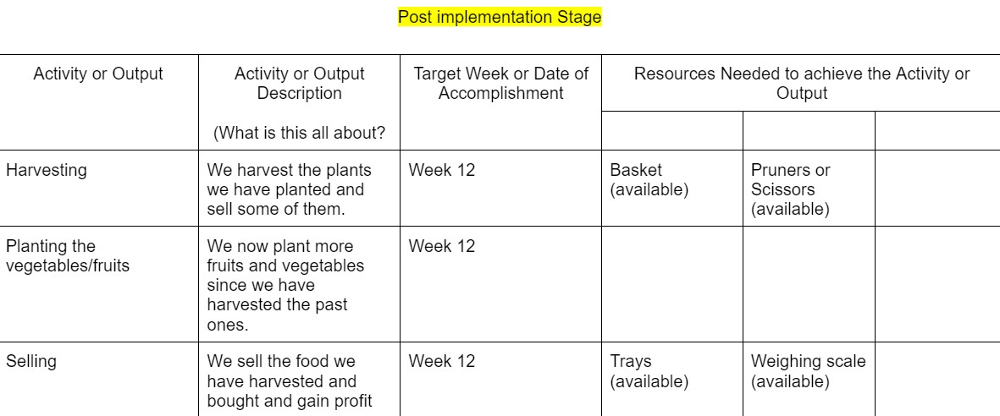

Helping Hand
Problem
The problem of SMAC is they don’t have another source of income other than donations and donations aren’t a consistent source of income because what if the donations stop or what if the donations decrease, then they won’t be able to provide for the needs of the children in their institution which is why SMAC needs another source of income. This is why we created a project where we will be suggesting another source of income and it will also save money. The project is about a food business, we will be selling food so SMAC will have another source of income and part of the project is planting fruits and vegetables so there will be no need to buy them which will save money. The food that will be sold will be simple like fried chicken and the customer won’t need to wait for it because it was already cooked before they arrive so that it will be fast, the leftovers from the food business can also be used to feed the children in the institution so that nothing will go to waste. Planting vegetables and fruits will be done so that SMAC won’t need to buy fruits and vegetables from markets so they would be able to save money. The money saved and the money earned will be used so the institution will be able to provide for the needs of the children and 30% will go to the business.
Project Importance
The project is very important as it will help the SMAC institution provide the budget to improve their quality of life for the children in the institution. The project will ensure that the money raised from the project's small food business will be given to the institution to provide the needs for the children and in the SMAC institution. The project will further improve financial issues for the institution so that the institution will be able to take in more poor children that need home. With the implementation of the project, this will improve the SMAC institution and will help the financial issues of the institution. This will also help provide the budget for the renovation of the institution’s building to improve the shelter for the children and the institution.
Project Proposal


{kind=link}
Project Objectives
The main goal of the project is to help the SMAC institution with their financial issues to improve the quality of life of the children and the institution.
The specific objectives of the project include:
1. To sell as many products to be given to the institution for their needs.
2. To renovate some damaged parts of the SMAC institution’s building like damaged roofs.
3. To do a feeding program utilizing our food business project for the children in the institution.
4. To create a safe and fun environment in the institution.
Project Results
1. The primary outcome is that the SMAC Institution will have a more stable and reliable source of income that will be able to supply the institution with enough money to afford their needs.
2. The improvement and renovation of the damaged parts in the institution's building will make the building safe and more stable during emergencies.
3. The kids in the institution will have better access to food.
Project Output
1. Create a set of instructions on what our entire plan is
2. All members agrees to the plan
3. Buy all our materials needed
4. Start planting
5. Set up market stand
6. Regularly check if all the plants are healthy
7. Start planting more if most of the past plants is healthy
Project Budget and Timeline
  
Creator of the Webpage - Japal IV Guiani
-The creator of the index webpage is Japal S. Guiani IV. He was born on September 12, 2007 and is 15 years old. He enjoys playing instruments, cooking, sports and reading books. He is from the section of 9-Favre and lives in Bangkal. He aspires to be an engineer and a businessman.